Unit 2 · Persepolis · Lesson 9
The design and ornamentation of the Achaemenid period
Whose ideas built Persepolis, and why did the king want them all in one place?
Year 11 Ancient History · Present with → or space · Read on a phone with R
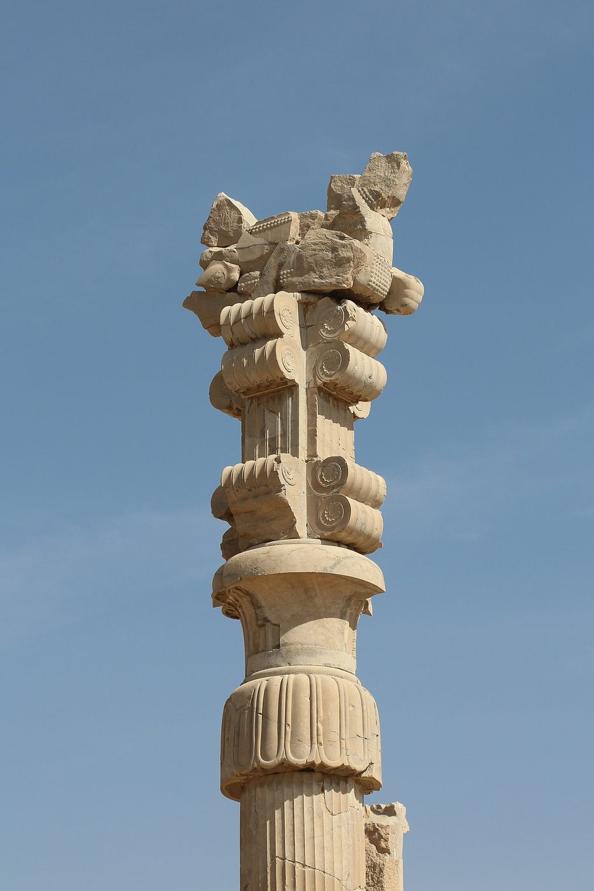
Review · books closed · 5 minutes · press K for the timer
Six questions from Lessons 1–8
- Name three kingdoms Cyrus II conquered, with a date for each. Media (about 550 BCE), Lydia (about 546 BCE; the exact year is debated) and Babylon (539 BCE).
- What does the winged figure on Gate R at Pasargadae combine? Four wings like the winged figures of Assyrian palaces, an Elamite-style robe and an Egyptian-style crown: already under Cyrus, one carving mixed the traditions of different lands. Today asks how far Persepolis did the same.
- Name two finds made at Persepolis in 1933 and what each is evidence for. The gold and silver foundation tablets of the Apadana (DPh), found by Herzfeld’s architect Krefter: Darius’s own claim about the size of his kingdom. The Fortification Tablets, found in the fortification wall: records of rations for workers, officials and travellers in the region run from Persepolis (Lesson 11).
- Writing · “Herodotus described Ecbatana about 120 years after Cyrus took it.” Which next sentence links back better, and why? A: “This shows that he was wrong about it.” B: “This distance in time means his seven walls may be a story he heard.” B. This distance in time (this + a summary noun) says exactly what this points back to and builds the next idea on it, with a hedge (may). A’s bare This shows is vague, and claims more than the date can show.
- What do the Apadana stairway reliefs show, and what are they reliable evidence for? Twenty-three delegations bringing gifts, led by Persian and Median ushers. Reliable for how the king wanted his empire to be seen; less reliable for a real ceremony on a particular day, and some delegations’ identities are debated.
- What survives of glazed brick at Persepolis, and where are the best-preserved panels? Only fragments: Muscarella lists “a frieze of cloisonné palmettes” and two bricks with circular bands. The best-preserved panels (archers, lions, griffins) come from Susa and are in the Louvre.
Mark your own answers in a different colour. Which question did you find hardest?
Learning intentions and success criteria · 2 minutes
Today’s goals
- Understand the main features of Achaemenid design and ornamentation
- Analyse how and why the design combined traditions from across the empire
- identify and describe four design features at Persepolis
- trace at least three features to earlier or regional traditions
- explain why the design combined many traditions, using DSf as evidence
Syllabus outcomes: AH-11-01 explains continuity and change in the ancient world · AH-11-03 explains the role and significance of forces, features, events, individuals and groups in shaping the past · AH-11-05 analyses different types of sources for evidence to support a historical account or argument · AH-11-07 communicates historical understanding, applying historical knowledge, terms and concepts. Life Skills: AH-LS-03 identifies continuity and change in the ancient world · AH-LS-05 describes features of places or societies in the ancient world.
Note-making · the routine for the whole course
How to structure your notes
questions and key terms, written after
short phrases, arrows (→ leads to), abbreviations (c. = about; BCE = Before the Common Era)
- 1Rule up the page firstA cue column about a quarter of the page wide; title and date at the top; room for a summary at the bottom.
- 2Listen and look, then writeDon’t copy while a slide is being explained. Phrases, not sentences.
- 3Write your own notes at each ✎ checkpointThen compare with the model notes, one row at a time. Add what you missed in a second colour.
- 4Write the cue questions afterwardsUse exam verbs: explain, analyse, assess. To revise, cover your notes and answer the cues.
- 5Finish with a three-sentence summaryTwo checkpoints today: the features and where they came from · Darius’s Susa charter and the court style. Your short answer is prose, not notes.
Feedback in action · 6 minutes · press K for the timer · your Lesson 8 paragraph comes back
Rewrite the move your feedback names
- 1opens with a provenance phrasewho made the source, when, where, and from what position
- 2uses precise evidence for its valuea short quotation or detail from the source, tied to the inquiry question
- 3explains purpose and perspectivewith a relating verb: presents … as, portrays, reveals
- 4judges reliability for this questionreliable for … but not for … because …, with modality and a precise evaluative verb
- 5names a limitation and ends decisivelylinks ideas with nominalisation; the last sentence answers the question, with no roadmap or summary
- Read your strength and your next step.
- Find the sentence your next step points to and underline it.
- Rewrite it underneath, using that point on the checklist.
- Check: is it a real change in thinking or language, not just a neater copy?
Key vocabulary · add to the unit word wall
Words for describing a court style
| Ideas | Meaning |
|---|---|
| Court style | The deliberate royal style of Achaemenid art, combining traditions from across the empire into a single look. |
| Lamassu | A guardian figure with a human head, a bull’s or lion’s body and wings — an Assyrian tradition, used at the Gate of All Nations. |
| Winged disc | A winged symbol carved above the king, often linked with the god Ahuramazda (its exact meaning is debated). |
| Ahuramazda | The great god of the Achaemenid kings, who claimed to rule by his favour. |
| Parts and patterns | Meaning |
|---|---|
| capital | The carved top of a column, on which the roof beams rest. |
| fluting | Shallow vertical grooves cut down the shaft of a column. |
| Egyptian-style cornice | A hollow, outward-curving band along the top of a doorway or window, in the Egyptian manner. |
| motif | An image or pattern used again and again, such as the lion attacking the bull. |
1 · The features · I do — think aloud · a column from the bottom up
A column from the bottom up
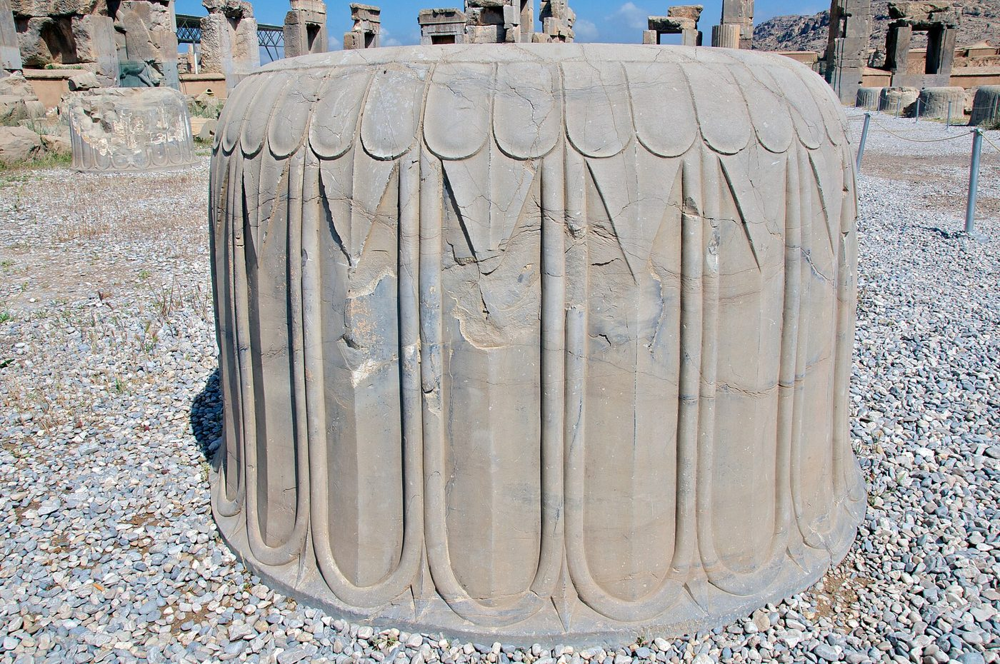
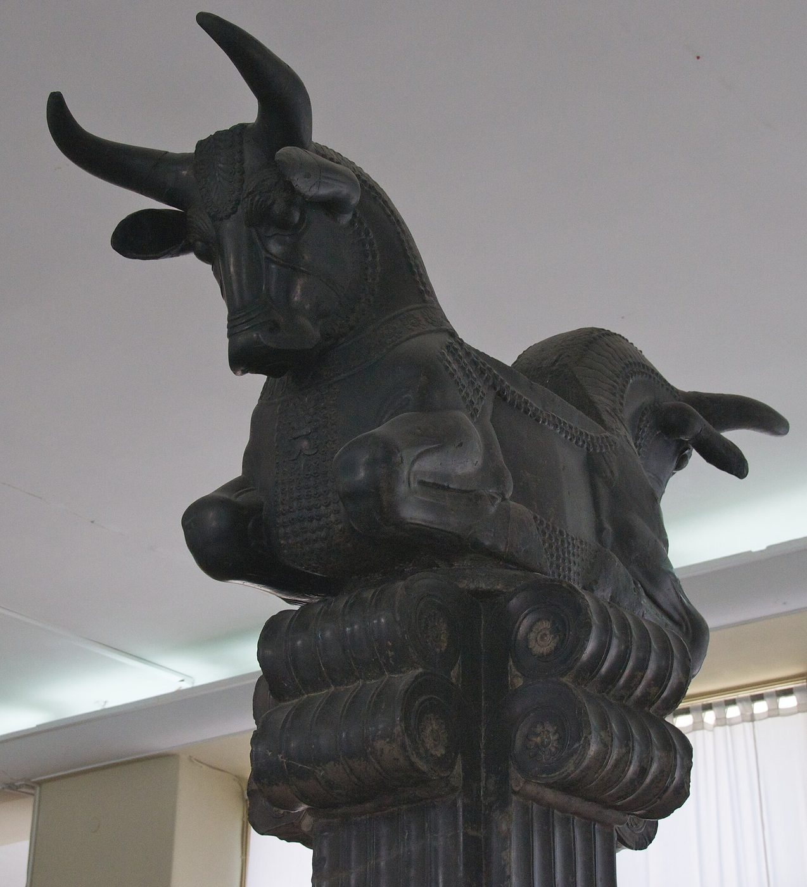
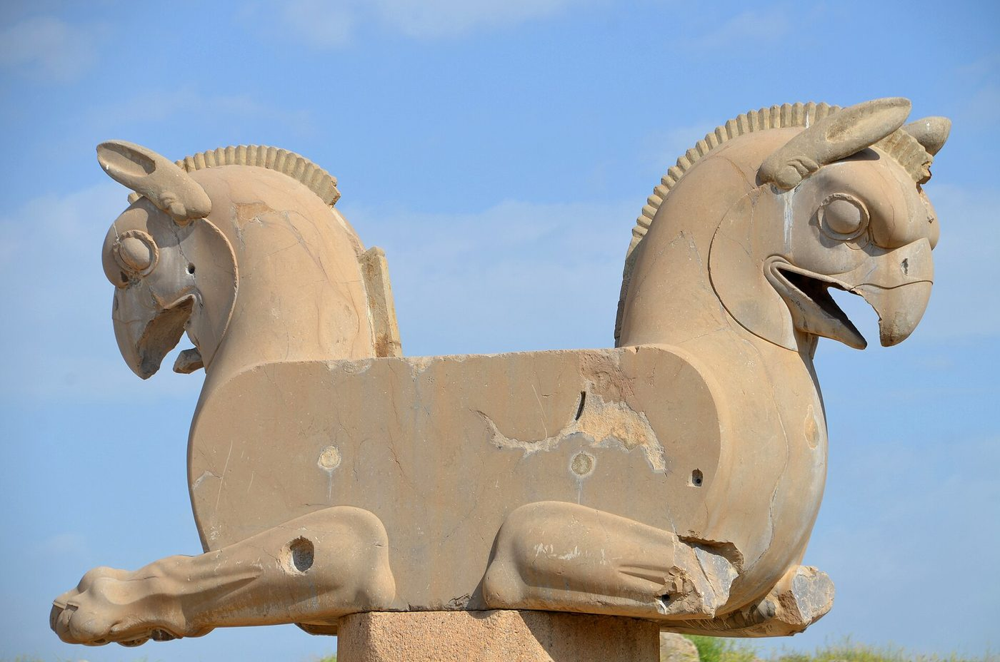
Which parts are borrowed, and which are Persian?
Borrowed: the fluted shaft and its rounded mouldings, which Boucharlat calls “… the contribution of Ionia to the positive eclecticism of Achaemenian art …”. Iranian: columned halls (already at Median sites and at Cyrus’s Pasargadae), and capitals of animals, already used at Pasargadae. New: putting them together, at a huge scale: the Apadana’s columns were about 20–24 metres high.
Images: A. Davey (CC BY 2.0) · Bernard Gagnon (CC BY-SA 4.0) · A. Davey (CC BY 2.0) · Carole Raddato (CC BY-SA 2.0). Full details on the last slide.
1 · The features · I do — think aloud · the guardians of the Gate of All Nations
Borrowed from Assyria, then changed
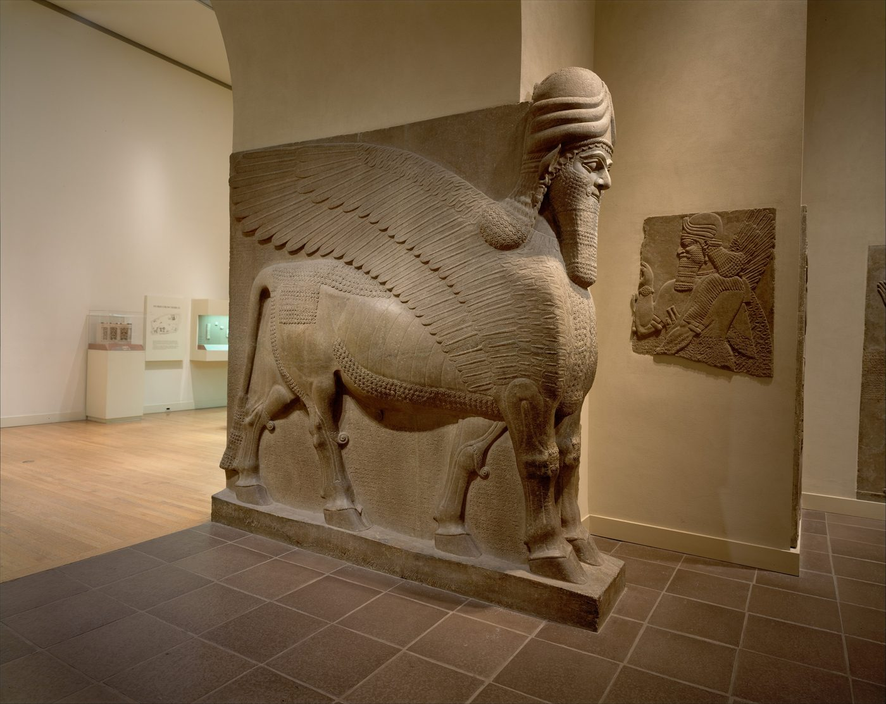
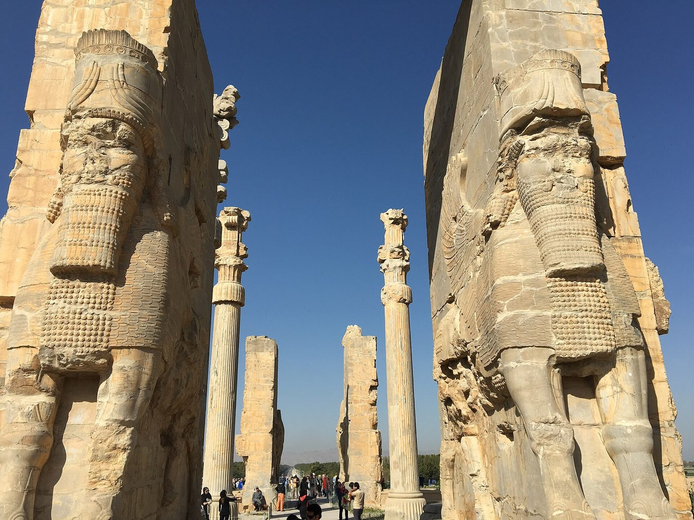
Nimrud (ancient Kalhu), about 883–859 BCE: about 350 years before Persepolis was begun
the eastern doorway of the Gate of All Nations, the entrance hall to the terrace (built under Xerxes)
Count the legs on the Assyrian bull. Shahbazi says the Persepolis bulls have four: what did the Persian sculptors keep, and what did they change?
Kept: human-headed winged bulls guarding a doorway, “well known from Assyrian art” (Shahbazi, Iranica). Changed: “… while the Assyrian prototypes had five legs, here the bulls are naturalistically four-legged …”. And they stand in a free-standing gatehouse that visitors passed through on their way into the terrace.
1 · The features · I do — compare two palace reliefs
Calm processions, not battles
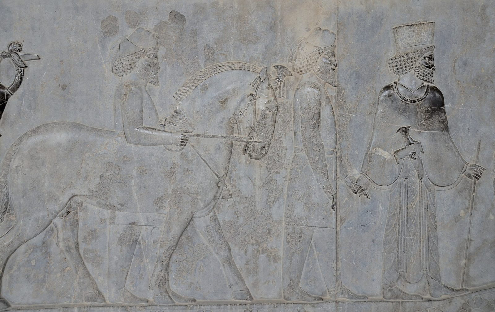
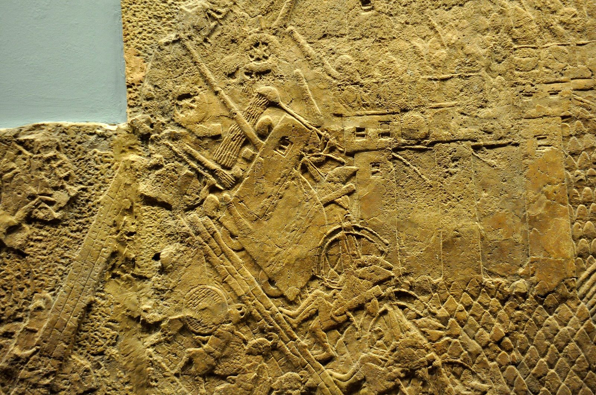
- figures in profile, calm and evenly spaced
- the same kinds of figure repeated, row after row
- gifts, not captives; an usher leads each group by the hand
- a city under attack: soldiers, shields, a siege engine
- crowded, full of movement
- a real campaign: Lachish was captured in 701 BCE
What did Persepolis take from Assyrian palace reliefs, and what did it leave out?
Calmeyer (Iranica), on the Apadana stairways: “Only the topic of a foreign delegation bringing gifts to the king was adopted from the Assyrians.” The wars were left out: none of the surviving stone reliefs on the terrace shows a battle or a siege. Soldiers stand on guard, and the only fights are the royal hero against beasts and the lion attacking the bull.
Images: Carole Raddato (CC BY-SA 2.0) · Osama Shukir Muhammed Amin (CC BY-SA 4.0). Full details on the last slide.
1 · The features · I do — three motifs you will see everywhere
The winged disc, the lion and the bull, rosettes and lotus flowers
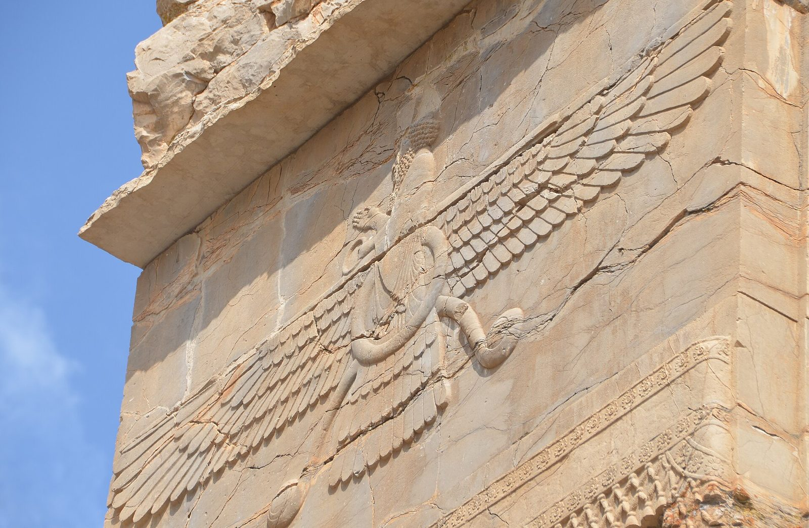
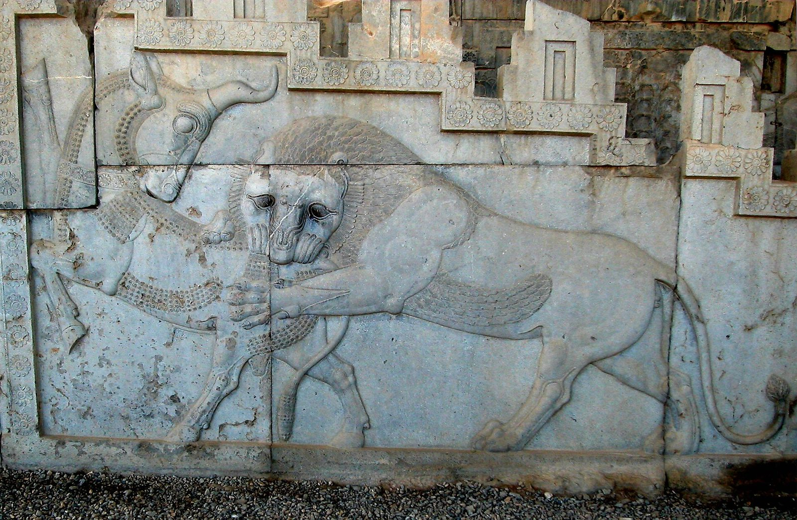
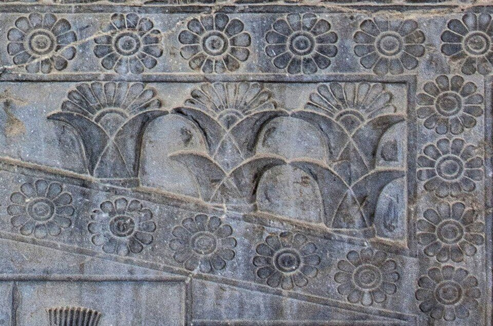
Why do we say the winged disc is ‘often linked with’ Ahuramazda?
Because no label says who or what it is. Scholars read it as the god Ahuramazda or as the king’s divine glory (khvarnah), and some think it is both, depending on whether a figure is shown in the disc. “Often linked with” keeps the doubt.
Images: Carole Raddato (CC BY-SA 2.0) · Yong Woo Park (CC BY 4.0) · Davide Mauro (CC BY-SA 4.0). Full details on the last slide.
1 · The features · I do — what is borrowed, what is new
Borrowed parts, a new whole

Look at the tops of the stone doorways and windows: Livius says the lintels of Darius’s palace “… are made in an Egyptianizing style”.
- Assyrian guardian bulls (the Gate)
- Egyptian-style tops on doorways and windows (Darius’s palace)
- Ionian-style fluting and stone-working (the columns)
- the combination: many traditions on one terrace
- the scale: halls of 72 or 100 columns
- one calm, uniform style, kept with very little change by Darius’s successors
So: almost every part has an older source, but no single tradition explains the whole. The combination is what makes it Persian.
Notes checkpoint 1 of 2
The features and where they came from
2 · Darius’s Susa charter · We do — supported reading · 4 minutes
Who built the king’s palace, and with what?
This palace which I built at Susa, from afar its ornamentation was brought. … And that the earth was dug downward, and that the rubble was packed down, and that the sun-dried brick was molded, the Babylonian people performed these tasks. The cedar timber, this was brought from a mountain named Lebanon. The Assyrian people brought it to Babylon; from Babylon the Carians and the Yaunâ [=Greeks] brought it to Susa. … The gold was brought from Lydia and from Bactria, which here was wrought. … The silver and the ebony were brought from Egypt. The ornamentation with which the wall was adorned, that from Yaunâ was brought. The ivory which was wrought here, was brought from Kush and from India and from Arachosia. The stone columns which were here wrought, a village named Abirâdu, in Elam - from there were brought. The stone-cutters who wrought the stone, those were Yaunâ and Lydians. The goldsmiths who wrought the gold, those were Medes and Egyptians. The men who wrought the wood, those were Lydians and Egyptians. The men who wrought the baked brick, those were Babylonians. The men who adorned the wall, those were Medes and Egyptians.
Darius I (king 522–486 BCE) · foundation charter of his palace at Susa, in Old Persian, Elamite and Babylonian, known from many fragments · translation as published by Livius.org · from Susa, not Persepolis: it describes the same royal way of building · wrought = worked, made
Name four materials and the lands they came from. Cedar from Lebanon · gold from Lydia and Bactria · silver and ebony from Egypt · ivory from Kush, India and Arachosia.
Who cut the stone, and where did the columns come from? Yaunâ (Ionian Greeks) and Lydians cut it; the stone columns came from Abirâdu in Elam.
What did the Babylonians do? Dug the foundations, packed the rubble, moulded the sun-dried brick, and worked the baked brick.
Who worked the gold, the wood and the walls? Gold: Medes and Egyptians · wood: Lydians and Egyptians · walls: Medes and Egyptians.
2 · Darius’s Susa charter · We do — link your list to the pictures · cold call
From Darius’s list to the stones of Persepolis
| Who (DSf) | What they did | Where we see that craft at Persepolis |
|---|---|---|
| Yaunâ (Ionian Greeks) and Lydians | cut the stone | probably the fluted shafts and fine stone-working; masons’ marks like letters of the Lydian alphabet on blocks at Persepolis and Susa |
| Babylonians | dug the foundations; worked the brick | brick walls (now mostly gone); glazed brick, a craft of Assyria and Babylon, survives at Persepolis only in fragments: the best panels are from Susa (pictured) |
| Medes and Egyptians | adorned the walls; worked the gold | wall decoration, mostly lost (Lesson 7). The Egyptian-style doorway tops show Egyptian taste, but DSf names Yaunâ and Lydians as the stone-cutters |
| Lydians and Egyptians | worked the wood | cedar roof beams resting on the animal capitals (the Apadana’s roof, probably of cedar, burned in 330 BCE) |
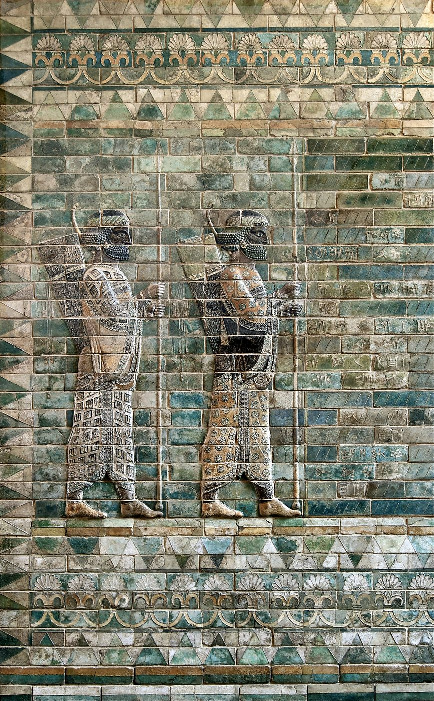
2 · Darius’s Susa charter · We do — why combine so many traditions?
Why would a king build in everyone’s style?
DSf is Darius’s own claim, about Susa. Boucharlat (Iranica), following Nylander, says it ‘has more of a propaganda character than any documentary value’. Yet the Persepolis tablets do name Ionian workers.
Why would Darius record which peoples did the work?
To present the palace as the work of the whole empire: many lands sent materials and many peoples did the work, for one king who built ‘by the grace of Ahuramazda’. The mixed style says the same thing in stone: one empire, built by and ruling over many peoples.
The court chose images from many older traditions and repeated them on purpose, as an official program: the themes came from the centre, not from each craftsman. The ISAC Museum makes a similar point: the style was “… a visual expression of the Achaemenid imperial ideology of diversity and order.” Against this, Michael Roaf notes that “the motifs borrowed are hardly modified from their original forms”.
Notes checkpoint 2 of 2
Darius’s Susa charter and the court style
3 · You do · ‘Spot the influence’ card sort in pairs · 4 minutes · press K for the timer
Where did each idea come from?
1Sort by the tradition each idea came from2Two traditions? Put it in a ‘tricky’ pile, with your reason3For each card: what changed at Persepolis?
Images: A. Davey (CC BY 2.0) · 4009dayton (CC BY-SA 4.0) · Bernard Gagnon (CC BY-SA 4.0) · Bernard Gagnon (CC BY-SA 4.0) · Carole Raddato (CC BY-SA 2.0) · Yong Woo Park (CC BY 4.0) · Carole Raddato (CC BY-SA 2.0) · Jebulon (Public domain). Full details on the last slide.
3 · You do · check your sort · cold call a pair before each row
Check your sort: the clearer cards, then the tricky ones
| Card | Tradition | What changed at Persepolis |
|---|---|---|
| A · bull capital | Iranian (Persian): animal capitals, including bulls, were already being tried out in Cyrus’s palace at Pasargadae | made far bigger: the Apadana’s columns were about 20–24 metres high |
| B · winged bulls | Assyrian | four legs, not five; set in a free-standing gatehouse on the way into the terrace |
| C · fluted shaft | Ionian and Lydian | set beneath Persian animal capitals |
| D · doorway tops | Egyptian | carved in stone for a Persian king’s palace |
| E · winged disc tricky | Assyrian (Mesopotamian), and first Egyptian | above a Persian king, probably for Ahuramazda or royal glory (debated) |
| F · lion and bull tricky | very ancient in Iran (Livius: from the fourth millennium BCE, older than the Medes and Persians); a similar image was on Lydian coins (Shahbazi) | placed beside the gift-bearers, framed with rosettes; what it meant is unknown |
| G · gift-bearers tricky | Assyrian theme; perhaps carved with Ionian help, or in a Babylonian manner (Ehrenberg) | calm, no battle scenes: 23 peoples in orderly rows |
| H · glazed brick tricky | Assyrian, then Babylonian craft (glazed figures); Susa also had older Elamite moulded brick. DSf: Babylonians worked the baked brick at Susa | Persian guards in the new style; the best survive at Susa, only fragments at Persepolis |
So: each card has an older source, but no one tradition explains the whole. Persepolis is continuity in its parts and change in its combination.
3 · You do · check first · gesture vote: one finger = A · two fingers = B
Which sentence explains why, not just what?
B links the features to a reason (by giving … made it suggest …) and keeps a hedge (suggest). A only lists what was combined: a good start, but it never says why.
3 · You do · Writing focus · 6 minutes · I do → We do → apply
Writing focus: weave a short quotation into your own sentence
Integrate a quotation in three parts: a signal phrase (who says it, in what), a short quotation woven into your own sentence (only the words that matter), and the reference. Then say what it suggests.
Little glazed brick survives at Persepolis itself: in the Encyclopaedia Iranica, Oscar Muscarella writes that its only examples “consisted of a frieze of cloisonné palmettes”, apart from two other bricks (‘Achaemenid glazed brick decoration’, 2017).
A worked example, written for this lesson, on what survives of glazed brick. Not this (a dropped quotation, standing alone): Glazed brick has mostly gone. “The only examples of glazed bricks from Persepolis consisted of a frieze of cloisonné palmettes.”
Which sentence integrates Muscarella’s words best?
- APersepolis has yielded only “a frieze of cloisonné palmettes” and two other bricks, which suggests that to picture its glazed brick we must look to Susa.
- BAs Margaret Cool Root argues, Persepolis has yielded only “a frieze of cloisonné palmettes” and two other bricks, which suggests that we must look to Susa.
- CAs Muscarella notes in the Encyclopaedia Iranica, Persepolis has yielded only “a frieze of cloisonné palmettes” and two other bricks, which suggests that we must look to Susa.
- DAs Muscarella notes in the Encyclopaedia Iranica, “The only examples of glazed bricks from Persepolis consisted of a frieze of cloisonné palmettes, and two bricks with circular bands.”
C says who and in what, weaves in only the words that matter and says what it suggests. A has no provenance: who says so? B gives Muscarella’s words to the wrong speaker. D lets a long quotation do the work: nothing is analysed.
Write your DSf sentence first: As Darius’s Susa charter records, … + a short quotation woven in + (DSf) + what it suggests. Use it as evidence in your short answer.
3 · You do · 8 minutes · press K for the timer
Explain how the design and ornamentation of Persepolis combined traditions from across the empire, and why.
Verb explain: how (trace each feature to a tradition) and why (the reason, with the links stated) · Topic design and ornamentation · Limits Persepolis; DSf as evidence, though it is about Susa · Do three features traced, a DSf quotation, a reason, one limit.
- Name three features and trace each to a tradition (and say what changed).
- Use DSf as evidence: “As Darius’s Susa charter records, …”
- Explain why, with causal and comparative language; end with one limit of DSf.
three named features · three traditions · one short DSf quotation · because or which suggests that · unlike or whereas · a hedge (probably, suggests) · one limit of the evidence
The design of Persepolis combined … · For example, the … at the … came from …, but … · As Darius’s Susa charter records, “…” · This mixture was probably deliberate, because … · However, DSf …
Assess Margaret Cool Root’s argument that Achaemenid art was a deliberate new creation rather than a borrowing: what evidence supports it, and what challenges it?
3 · You do · compare with a model · two students read theirs first
A model short answer
The design and ornamentation of Persepolis combined traditions from across the empire into one court style. At the Gate of All Nations, human-headed winged bulls guarded the doorway, a tradition borrowed from Assyrian palaces, although, unlike the five-legged Assyrian bulls, they were given four legs. The columns rose on fluted shafts, an Ionian contribution, to capitals of two animals set back to back, a form already used at Cyrus’s Pasargadae, while the doorways of Darius’s palace were topped in an Egyptian style. The empire’s peoples also supplied the skill: as Darius’s Susa charter records, “The stone-cutters who wrought the stone, those were Yaunâ and Lydians,” and “The men who wrought the baked brick, those were Babylonians.” The mixture was probably deliberate, because the same style was repeated across the terrace with very little change, which suggests that the king wanted his buildings to present one empire, built by and ruling over many peoples. However, the charter describes Susa rather than Persepolis and is Darius’s own claim, so it shows how he wanted the work to be seen more than exactly who did it.
Finish your notes If time · or at home
Summary: three sentences
- What were the main features of Achaemenid design at Persepolis?
- Where did its ideas and its craftsmen come from?
- Why were so many traditions combined?
The buildings of Persepolis combined columned halls and animal capitals from the Iranian tradition with Assyrian guardian bulls, Ionian fluted column shafts, Egyptian-style doorway tops and motifs such as the winged disc, the lion attacking the bull and bands of rosettes. Darius’s Susa charter (DSf) records that, for his palace at Susa, peoples from across the empire supplied the materials and did the work, for example Ionians and Lydians as stone-cutters and Babylonians as brick-makers. The combination, the vast scale and the calm, repeated style were new, which suggests a deliberate court style designed to present one empire built by, and ruling over, many peoples.
Check for understanding · hinge question · hold up your A, B, C or D card on “3, 2, 1, show”
Why did Achaemenid design combine styles from many peoples?
- Abecause Persian craftsmen had no artistic style of their own
- Bbecause the king wished to present one empire of many peoples
- Cbecause stone and timber were cheaper in the conquered lands
- Dbecause Greek craftsmen planned and designed the whole site
A ignores the Iranian parts (columned halls, animal capitals) and the fact that the combination itself was Persian. C does not fit DSf: cedar was carried from Lebanon, through Babylon, to Susa, so cost was probably not the reason; at Persepolis much of the stone was quarried close by, in the mountain behind the terrace (Boucharlat names a quarry on Kuh-e Rahmat). D takes one group for the whole: DSf names Ionians and Lydians as stone-cutters, but also Babylonians, Medes and Egyptians, and the court set the style.
Exit ticket · 4 minutes · before you leave
Two sentences
One feature of Persepolis, the tradition it came from, and one thing that changed.
“The Persian kings’ builders combined many traditions because …”
1 · a named feature (the Gate’s bulls, a fluted shaft, an Egyptian-style doorway top …), its tradition, and a change (four legs, a new scale, a Persian capital above it). 2 · a reason tied to the empire (one empire, built by and ruling over many peoples), ideally with DSf as evidence, and a hedge (probably, suggests).
Then check yourself against today’s three “I can” statements. Next lesson: Persepolis as a centre of Persian power: what the inscriptions and reliefs claim.
Practice and review · 1 of 3 · true, false, justify
True or false? Justify your answer
- 1The human-headed winged bulls at the Gate of All Nations were a Persian invention. False — they follow an Assyrian tradition, reworked: four legs instead of five.
- 2Darius’s charter DSf was found at Persepolis. False — it is from his palace at Susa; it describes the same royal way of building.
- 3According to DSf, the stone-cutters were Yaunâ (Ionians) and Lydians. True — and Lydian-style masons’ marks on blocks at Persepolis point the same way.
- 4Like Assyrian palace reliefs, the Persepolis reliefs show the king’s battles. False — they show calm processions; for the Apadana stairways, only the theme of foreigners bringing gifts was taken from Assyrian reliefs (Calmeyer).
- 5Historians agree that the winged disc shows the god Ahuramazda. False — it is often linked with him, but some read it as the king’s divine glory (khvarnah).
- 6The court style set under Darius changed very little under later kings. True — his successors kept it with very little alteration (ISAC Museum).
Practice and review · 2 of 3 · writing
Write it as a historian
One sentence on one feature, using unlike or whereas, and “which suggests that …”.
Unlike the five-legged guardian bulls of Assyrian palaces, the human-headed bulls at the Gate of All Nations were given four legs, which suggests that the Persian sculptors reworked an Assyrian tradition rather than simply copying it.
Finish: “DSf is reliable for … but not for … because …”
DSf is reliable for how Darius wanted his building work to be seen, as the work of his whole empire, but not as an exact record of who built Persepolis, because it is his own claim and it describes his palace at Susa.
Make it one sentence: signal phrase, short quotation woven in, reference. Darius used ivory from far away. “The ivory which was wrought here, was brought from Kush and from India and from Arachosia.”
As Darius’s Susa charter records, the ivory for his palace “was brought from Kush and from India and from Arachosia” (DSf), which suggests that he wanted the palace to display materials from distant lands. (A model, written for this lesson: who says it, only the words that matter, the reference, then what it suggests.)
Assess Margaret Cool Root’s argument that Achaemenid art was a deliberate new creation rather than a borrowing: what evidence supports it, and what challenges it?
Margaret Cool Root argues that Achaemenid art was a deliberate creation: the court chose images from many older traditions and repeated them as an official program, so the themes came from the centre rather than from individual craftsmen. She does not deny the borrowing: her point is that the borrowed images were chosen and combined on purpose. Much of the evidence supports her. The style was set under Darius and kept with very little change by his successors; borrowed parts were reworked, as the Gate’s four-legged guardian bulls show; and the Apadana stairways took only the Assyrian theme of foreign peoples bringing gifts, without the battles. Darius’s Susa charter also presents the mixture as planned, listing the peoples who worked each material. However, Michael Roaf points out that the borrowed motifs are “hardly modified from their original forms”, and the charter is Darius’s own claim about Susa, which Rémy Boucharlat, following Carl Nylander, calls more propaganda than record. On balance, Root is convincing about the combination and its message, which were new, even though many single parts were borrowed almost unchanged.
Practice and review · 3 of 3 · cover your notes and answer from memory
Quick checks
- Describe the parts of a column at Persepolis. Many had a bell-shaped base, a fluted stone shaft and a capital of two animals back to back (bulls, lions or human-headed bulls), with the roof beams resting between them; some halls had square bases and plastered wooden shafts.
- Where did the Gate’s guardian bulls come from, and what changed? From Assyrian palace and city gateways; at Persepolis they have four legs, not five, and stand in a free-standing gatehouse on the way into the terrace.
- How do the Persepolis reliefs differ from Assyrian palace reliefs? They show calm, repeated processions of gift-bearers in profile, and no battle scenes; on the Apadana stairways, only the gift-bearing theme came from Assyria (Calmeyer).
- What does DSf say about who worked the stone and the baked brick? The stone-cutters were Yaunâ (Ionian Greeks) and Lydians; the baked brick was worked by Babylonians.
- Why is the meaning of the winged disc debated? No text labels it: it may stand for the god Ahuramazda or for the king’s divine glory (khvarnah), or both.
- Why did Achaemenid design combine so many traditions? Probably to present one empire, built by and ruling over many peoples: a deliberate court style, in Root’s view an official program set by the court.
Sources and credits
Where everything comes from
Darius I, Susa foundation charter DSf, translation as published by Livius.org (after P. Lecoq, 1997); Livius.org pages on Persepolis (Apadana, east stairs, Gate of All Nations, Palace of Darius) and Ahuramazda. © Livius.org, quoted briefly.
Encyclopaedia Iranica online: A. S. Shahbazi, “Persepolis” (2009); P. Calmeyer, “Art in Iran iii. Achaemenid art and architecture” (1986); R. Boucharlat, “Greece vii. Greek art and architecture in Iran” (2002); E. Ehrenberg, “Achaemenid visual representations of royal figures” (2017); O. W. Muscarella, “Achaemenid glazed brick decoration” (2017); D. Stronach and H. Gopnik, “Pasargadae” (2009); W. Kleiss, “Columns (architectural)” (archived copy). Quoted briefly.
ISAC Museum (University of Chicago), Persepolis: Images of an Empire (curator Kiersten Neumann), quoting Margaret Cool Root. M. C. Root, The King and Kingship in Achaemenid Art (Leiden, 1979), as summarised by A. Wright, Ex Historia. M. Roaf, “Was Achaemenid Art an ‘International Style’?” P. Hunt, “Achaemenid Persian Griffin Capital at Persepolis” (Stanford Archaeolog). C. Chandler, The iconography of warfare (honours thesis, University of Colorado Boulder, 2014). Sennacherib 15, RINAP 3 (ORACC). Archaeology (AIA), 26 October 2023, on the Dur-Sharrukin lamassu.
Outcomes and content: NSW Education Standards Authority (NESA), Ancient History 11–12 Syllabus (2024). © NESA.
Teacher resources: Architectural Marvels: The Terrace and Gateway, Palaces and Private Spheres, Imperial Narratives in Stone, The Treasury and the Hall of a Hundred Columns (class notebook ‘Persepolis’), used as leads; every fact re-checked.
Influence map: drawn for this lesson, a schematic, not to scale.
- A column of the Gate of All Nations · Photo: Bernard Gagnon · CC BY-SA 4.0 · source
- A bell-shaped column base, Persepolis · Photo: A. Davey · CC BY 2.0 · source
- A double-bull capital from Persepolis (National Museum of Iran) · Photo: A. Davey · CC BY 2.0 · source
- A capital of two griffin-like creatures (‘homa birds’), Persepolis · Photo: Carole Raddato · CC BY-SA 2.0 · source
- Human-headed winged bull (lamassu), Nimrud (The Met 32.143.1) · The Metropolitan Museum of Art, Open Access · CC0 1.0 · source
- The Gate of All Nations, eastern doorway · Photo: 4009dayton · CC BY-SA 4.0 · source
- Gift-bearers on the Apadana’s east stairway (usually identified as Armenians) · Photo: Carole Raddato · CC BY-SA 2.0 · source
- The Assyrian siege of Lachish: relief from Sennacherib’s palace at Nineveh (British Museum) · Photo: Osama Shukir Muhammed Amin · CC BY-SA 4.0 · source
- Winged figure in a disc, Tripylon, Persepolis · Photo: Carole Raddato · CC BY-SA 2.0 · source
- A lion attacking a bull, staircase relief, Persepolis · Photo: Yong Woo Park · CC BY 4.0 · source
- Lotus flowers and rosettes, Apadana east stairway · Photo: Davide Mauro · CC BY-SA 4.0 · source
- The Tachara, palace of Darius I · Photo: Bernard Gagnon · CC BY-SA 4.0 · source
- Glazed-brick archers from the palace of Darius I at Susa (Louvre AOD 488) · Photo: Jebulon · Public domain · source

.jpg){kind=link}
.jpg){kind=link}
.jpg){kind=link}

.jpg){kind=link}

,_Persepolis,_Iran_(47727263202).jpg){kind=link}


All images are public domain or openly licensed, and were resized for the web. Each is shared under the licence shown.